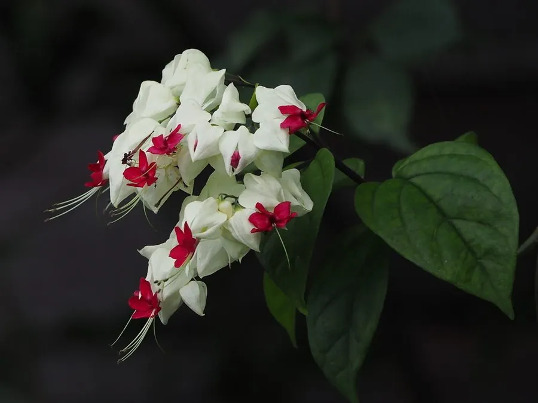

灌木与花木 · 植物界
龙吐珠 Clerodendrum thomsoniae

唇形科大青属常绿藤状灌木，花萼白色、花冠鲜红，开放时红瓣从白萼中伸出，恰似龙口吐珠，十分奇特。
- 分类
- 门被子植物门纲木兰纲目唇形目科唇形科属大青属
- 栖息环境
- 西非热带雨林边缘，喜温暖湿润、半阴环境，怕强光暴晒
- 地理分布
- 原产西非；中国华南、西南及世界热带地区广泛栽培
- 保护级别
- IUCN 暂无评估；栽培普遍，野生种群未受明显威胁
物种志
龙吐珠为常绿藤状灌木，高 2–3 米，茎四棱形，攀援或披散生长。叶片卵状披针形，长 6–12 厘米，全缘，上面深绿色。聚伞花序腋生或顶生，花萼白色、膨大呈灯笼状，花冠鲜红色，从白色花萼中伸出，形似龙口吐珠；雄蕊细长外露。核果球形，成熟时蓝黑色。
本种原产西非热带地区，喜温暖湿润、半阴的环境，在中国华南、西南常作盆栽或篱垣攀援植物。它花形奇特、白萼红冠对比鲜明，花期长，是优良的观赏花木。龙吐珠不耐寒，北方需温室越冬；全株含大青属常见的萜类成分，民间虽有药用记载，但不可自行采食。栽培时需设支架供其攀援，并保持较高空气湿度。
形态与习性
- 株高2–3 米，藤状攀援
- 花期5–10 月，白萼红冠
- 果期秋季，核果蓝黑色
- 光照喜半阴，忌夏季强光直射
- 水分喜湿润，需较高空气湿度
- 土壤疏松肥沃、排水良好的微酸性壤土
- 主要用途盆栽、篱垣攀援与庭院观赏
趣味知识
- 龙吐珠的白色部分其实是花萼，红色部分才是真正的花冠。
- 花开后红冠从白萼中伸出，形态像龙口含珠，因此得名“龙吐珠”。
- 它原产西非，19 世纪传入欧洲后成为温室中的热门观赏植物。
- 龙吐珠的茎四棱形，是唇形科大青属常见的形态特征。